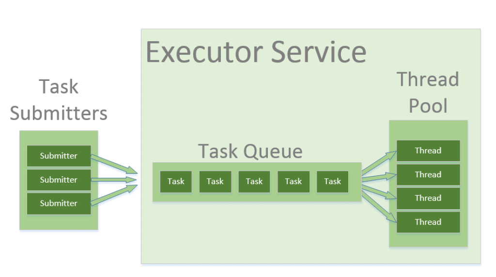
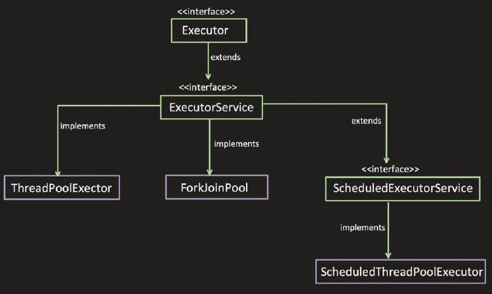
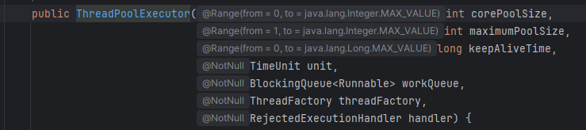
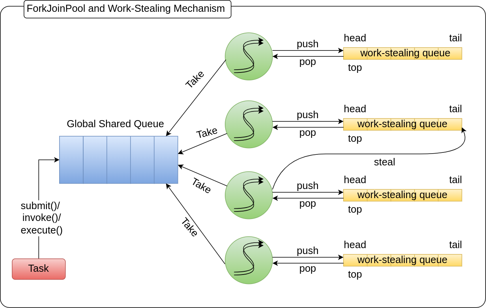
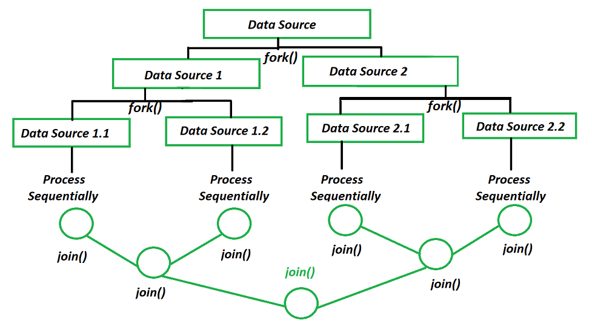

Thread Pools & Executors
What is ThreadPool?
A Thread Pool in Java is a mechanism to reuse a fixed number of threads to execute multiple tasks, instead of creating a new thread for every task.

It is part of
java.util.concurrent
and mainly implemented using
ThreadPoolExecutor
Why Thread Pool?
- Thread Creation time can be saved:
- When each thread is created, space is allocated to it (stack, heap, program counter etc.), and this takes time.
- With thread pool, this can be avoided by reusing the thread.
- Overhead of managing the Thread lifecycle can be removed:
- Thread has different states like Running, Waiting, terminate etc., and managing thread state includes complexity.
- Thread pool abstracts away this management.
- Increased the performance:
- More threads means more Context Switching time.
- Using thread pool thread creation, excess context switching can be avoided.

ExecutorService
- ExecutorService is an interface in Java (
java.util.concurrent) that: - Manages a pool of threads
- Executes tasks asynchronously
- Handles thread lifecycle automatically
ExecutorService executor = Executors.newFixedThreadPool(3);
executor.submit(() -> {
System.out.println("Task executed by: " + Thread.currentThread().getName());
});
executor.shutdown(); // MandatoryHow It Works Internally?
- Depends on:
- corePoolSize
- maxPoolSize
- Queue type
- Flow:
- If threads < corePool → create new thread
- Else → add task to queue
- If queue full → create new thread (till maxPool)
- If max reached → reject task
Ways to Create ExecutorService
- Fixed Thread Pool =>
Executors.newFixedThreadPool(5); - Cached Thread Pool =>
Executors.newCachedThreadPool(); - Single Thread Executor =>
Executors.newSingleThreadExecutor(); - Scheduled Thread Pool =>
Executors.newScheduledThreadPool(2);
Rejection Policies
When pool is full:
AbortPolicy→ throws exceptionCallerRunsPolicy→ caller thread executesDiscardPolicy→ silently dropsDiscardOldestPolicy→ removes oldest task
Note:
Avoid Executors factory methods in production
Instead use:
new ThreadPoolExecutor(
corePoolSize,
maxPoolSize,
keepAliveTime,
TimeUnit.SECONDS,
new LinkedBlockingQueue<>(100)
);- Why?
Prevents unbounded queue / threads
Gives full control
ThreadPoolExecutor
ThreadPoolExecutor is the core implementation of a thread pool in Java that gives you full control over thread management, task queuing, and execution policies.

Core Parameters
corePoolSize
+ Number of threads initially created and kept in the pool (Minimum threads always kept alive) maximumPoolSize
+ Max threads allowed (if no. of threads == `corePoolSize` and queue is also full, then new threads are created till no. of threads less than `maximumPoolSize`)
+ Excess threads will remain in pool if pool is not shutdown. If `allowCoreThreadTimeOut` is set to true, then excess threads get terminated after remaining idle for `KeepAliveTime`. allowCoreThreadTimeOut
+ If this property set to True (default false), idle thread kept alive till time specified by `keepAliveTime` keepAliveTime
+ Extra threads (beyond core) will die after this idle time. TimeUnit
+ TimeUnit for the keepAliveTime, whether Millisecond or Second or Hours, etc. BlockingQueue
+ Queue used to hold tasks, before they get picked by the worker thread.
- Bounded Queue: Queue with FIXED capacity.
- Like: ArrayBlockingQueue
- Unbounded Queue: Queue with NO FIXED capacity.
- Like: LinkedBlockingQueueThreadFactory
+ Factory for creating new threads. ThreadPoolExecutor uses this to create new threads.
+ This factory provides an interface to:
+ To give custom thread name
+ To give custom thread priority
+ To set Thread Daemon flag, etc. RejectedExecutionHandler
+ Handler for tasks that cannot be accepted by thread pool.
+ Generally logging logic can be put here, for debugging purpose.
+ new `ThreadPoolExecutor.AbortPolicy`
+ Throws `RejectedExecutionException`
+ new `ThreadPoolExecutor.CallerRunsPolicy`
+ Executes the rejected task in the caller thread (thread that attempted to submit the task)
+ new `ThreadPoolExecutor.DiscardPolicy`
+ Silently discard the rejected task, without throwing any exception
+ new `ThreadPoolExecutor.DiscardOldestPolicy`
+ Discard the oldest task in the queue, to accommodate new task Flow Diagram
Task →
↓
[Core threads available?] → create thread
↓ No
[Queue has space?] → add to queue
↓ No
[Can create more threads?] → create thread (max limit)
↓ No
→ Reject task ❌Example
public class Practice {
public static void main(String[] args) {
ThreadPoolExecutor executor = new ThreadPoolExecutor(
2, 4,
60, TimeUnit.SECONDS,
new ArrayBlockingQueue<>(5),
new CustomThreadFactory(),
new CustomRejectionHandler()
);
//Submit tasks
for (int i = 1; i <= 15; i++) {
executor.execute(new Task(i));
}
executor.shutdown();
}
}
// Custom Runnable
class Task implements Runnable {
private final int taskId;
public Task(int taskId) {
this.taskId = taskId;
}
public int getTaskId() {
return taskId;
}
@Override
public void run() {
System.out.println(Thread.currentThread().getName() + " executing task " + taskId);
try {
Thread.sleep(5000);
} catch (Exception e) {
}
}
}
// Custom ThreadFactory
class CustomThreadFactory implements ThreadFactory {
@Override
public Thread newThread(Runnable r) {
return new Thread(r);
}
}
// Custom RejectionHandler
class CustomRejectionHandler implements RejectedExecutionHandler {
@Override
public void rejectedExecution(Runnable r, ThreadPoolExecutor executor) {
if (r instanceof Task task) {
System.out.println("Task " + task.getTaskId() + " denied");
} else {
System.out.println("Unknown task denied");
}
}
}Output:
Task 10 denied
Task 11 denied
Task 12 denied
Task 13 denied
Task 14 denied
Task 15 denied
Thread-3 executing task 9
Thread-0 executing task 1
Thread-1 executing task 2
Thread-2 executing task 8
(wait for 5 seconds)
Thread-0 executing task 3
Thread-2 executing task 4
Thread-3 executing task 5
Thread-1 executing task 6
(wait for 5 seconds)
Thread-3 executing task 7Explanation:
- Configurations:
corePoolSize = 2
maxPoolSize = 4
queue size = 5
tasks = 15
task time = 5 sec- Phase 1: Core Threads Creation (Tasks 1, 2)
Task 1 → Thread-0
Task 2 → Thread-1
Because:current threads < corePoolSize (2)
- Phase 2: Fill Queue (Tasks 3 → 7)
Queue capacity = 5
Queue: [3, 4, 5, 6, 7]
- No new threads created yet
- Phase 3: Create Extra Threads (Tasks 8, 9)
Queue is now FULL → executor tries to expand threads
Task 8 → Thread-2
Task 9 → Thread-3
- Because:
alive threads < maxPoolSize (4)
- Phase 4: Rejection Starts (Tasks 10 → 15)
Now:
threads = 4 (max reached)
queue = full- So tasks are rejected:
Task 10 denied
Task 11 denied
Task 12 denied
Task 13 denied
Task 14 denied
Task 15 denied- Now Execution Begins (Parallel)
At this point:
| Thread | Task |
|---|---|
| Thread-0 | Task 1 |
| Thread-1 | Task 2 |
| Thread-2 | Task 8 |
| Thread-3 | Task 9 |
| Queue | 3,4,5,6,7 |
- After 5 seconds (First Batch Done)
Threads become free and pick from queue:
Thread-0 → Task 3
Thread-1 → Task 6
Thread-2 → Task 4
Thread-3 → Task 5- Order may vary slightly due to scheduling
- After next 5 seconds
Only one task left in queue:
Task 7So:
Thread-3 → Task 7- Timeline
Step 1:
[1,2] → running
[3–7] → queued
[8,9] → running (extra threads)
[10–15] → ❌ rejected
Step 2 (after 5 sec):
[3,4,5,6] → running
Step 3 (after 10 sec):
[7] → running- All submissions happen first
- Rejections happen immediately
- Execution logs come later
Why tasks 8 & 9 executed before 3–7?
- Because:
- Tasks 3–7 are in queue
- Tasks 8–9 triggered new thread creation
- New threads execute incoming tasks immediately
Behavior with Queue Types
- LinkedBlockingQueue (Unbounded)
Core threads → Queue → (never reaches maxPoolSize)Key Point:
- Queue NEVER fills
- So:
+ No new threads beyond core
+ No rejection
- Case 2:
SynchronousQueue(No Queue)
Task → Direct handoff → Thread required immediately- No queue storage
- Execution Flow
If thread available → execute
Else → create new thread (up to max)
Else → reject ❌Interview question:
Why you have taken corePoolSize as 2, why not 10 or 15 or another number, what’s the logic?
Answer:
- According to Workload Type
🟢 CPU-bound tasks: Threads ≈ Number of CPU cores
🔵 IO-bound tasks: Threads ≈ CPU cores × (1 + wait time / compute time)
- generic formula:
Threads = CPU cores × (1 + Wait Time / Compute Time)
Work-Stealing Pool (Fork/Join Pool)
- A Work-Stealing Pool is a special type of thread pool where: Idle threads “steal” tasks from busy threads to maximize CPU utilization.
- This is implemented using 👉
ForkJoinPool - Instead of:
One shared queue ❌
It uses:
Each thread has its own queue ✅
How Work-Stealing Works?

- It creates a Fork‑Join Pool Executor.
- Number of threads depends upon the Available Processors or we can specify in the parameter.
- There are 2 queues:
- Submission Queue (global shared queue)
- Work‑Stealing Queue for each thread (it’s a Dequeue)
- If all threads are busy, task would be placed in "Submission Queue" (or whenever we call
submit()method, tasks goes into submission queue only) - Lets say task1 picked by ThreadA. And if 2 subtasks created using fork() method:
- Subtask1 will be executed by ThreadA only
- Subtask2 is put into the ThreadA work‑stealing queue
- If any other thread becomes free, and there is no task in Submission queue, it can "STEAL" the task from the other thread's work‑stealing queue.
- Task can be split into multiple small sub‑tasks. For that Task should extend:
RecursiveTaskRecursiveAction
- We can create Fork‑Join Pool using
newWorkStealingPoolmethod inExecutorService=>Executors.newWorkStealingPool();
Or
By calling ForkJoinPool.commonPool() method.
Fork/Join Concept

- Fork
- Split task into smaller subtasks
- Join
- Combine results of subtasks
Complete working example
public class Practice {
// Task to compute sum of array
static class SumTask extends RecursiveTask<Long> {
private static final int THRESHOLD = 3; // small task limit
private int[] arr;
private int start;
private int end;
public SumTask(int[] arr, int start, int end) {
this.arr = arr;
this.start = start;
this.end = end;
}
@Override
protected Long compute() {
// Base case: small task → compute directly
if (end - start <= THRESHOLD) {
long sum = 0;
for (int i = start; i < end; i++) {
sum += arr[i];
}
System.out.println(
Thread.currentThread().getName() +
" computed directly: " + sum +
" for range [" + start + "," + end + ")"
);
return sum;
}
// Divide task
int mid = (start + end) / 2;
SumTask leftTask = new SumTask(arr, start, mid);
SumTask rightTask = new SumTask(arr, mid, end);
// Fork left task (async)
leftTask.fork();
// Compute right task (sync)
long rightResult = rightTask.compute();
// Join left result
long leftResult = leftTask.join();
// Combine results
return leftResult + rightResult;
}
}
public static void main(String[] args) {
// Input array
int[] arr = {1, 2, 3, 4, 5, 6, 7, 8, 9, 10};
// Create ForkJoinPool (work-stealing pool)
ForkJoinPool pool = new ForkJoinPool();
// Submit task
SumTask task = new SumTask(arr, 0, arr.length);
long result = pool.invoke(task);
System.out.println("\nFinal Sum: " + result);
pool.shutdown();
}
}Output:
ForkJoinPool-1-worker-1 computed directly: 27 for range [7,10)
ForkJoinPool-1-worker-2 computed directly: 12 for range [2,5)
ForkJoinPool-1-worker-4 computed directly: 3 for range [0,2)
ForkJoinPool-1-worker-3 computed directly: 13 for range [5,7)
Final Sum: 55shutdown vs await Termination vs shutdownNow
Shutdown:
- Initiates orderly shutdown of the ExecutorService.
- After calling Shutdown, Executor will not accept new task submission.
- Already submitted tasks will continue to execute.
AwaitTermination:
- It’s an optional functionality. Returns true / false.
- It is used after calling Shutdown method.
- Blocks calling thread for specific timeout period, and waits for ExecutorService shutdown.
- Returns true, if ExecutorService gets shutdown within specific timeout, else false.
shutdownNow:
- Best effort attempt to stop / interrupt the actively executing tasks
- Halt the processing of tasks which are waiting
- Return the list of tasks which are awaiting execution
Scenario 1: Task submission after shutdown
ExecutorService executor = Executors.newFixedThreadPool(5);
executor.submit(() -> System.out.println("Task submitted before shutdown..."));
executor.shutdown();
System.out.println("trying to submit the task after shutdown...");
executor.submit(() -> System.out.println("Task submitted after shutdown..."));Output:
trying to submit the task after shutdown...
Task submitted before shutdown...
Exception in thread "main" java.util.concurrent.RejectedExecutionException: Task java.util.concurrent.FutureTask@568db2f2[Not completed, task = java.util.concurrent.Executors$RunnableAdapter@4dd8dc3[Wrapped task = Practice$$Lambda$17/0x00000185a2001c18@6d03e736]] rejected from java.util.concurrent.ThreadPoolExecutor@378bf509[Terminated, pool size = 0, active threads = 0, queued tasks = 0, completed tasks = 1]Scenario 2: Shutdown do not impact the already submitted task
public class Practice {
public static void main(String[] args) {
ExecutorService executor = Executors.newFixedThreadPool(5);
executor.submit(() -> {
try {
Thread.sleep(5000);
} catch (InterruptedException e) {
throw new RuntimeException(e);
}
System.out.println("Task submitted before shutdown..."); // this will get printed even if we call shutdown before finishing sleep time.
});
executor.shutdown();
System.out.println("Main thread finished working.");
}
}Output:
Main thread finished working.
(wait for 5 seconds)
Task submitted before shutdown...Scenario 3: usage of AwaitTermination
public class Practice {
public static void main(String[] args) throws InterruptedException {
ExecutorService executor = Executors.newFixedThreadPool(5);
executor.submit(() -> {
try {
Thread.sleep(5000);
} catch (InterruptedException e) {
throw new RuntimeException(e);
}
System.out.println("Task submitted before shutdown...");
});
executor.shutdown();
System.out.println("Main thread is waiting...");
executor.awaitTermination(6,TimeUnit.SECONDS); // main thread will wait for 6 seconds for executor to finish working.
System.out.println("Main thread finished working.");
}
}Output:
Main thread is waiting...
(wait for 6 seconds)
Task submitted before shutdown...
Main thread finished working.ScheduledThreadPoolExecutor
It is a thread pool that can: Execute tasks after a delay or repeatedly at scheduled intervals.
Core Capabilities
- One-time delayed execution
schedule(task, delay, unit)- Periodic execution (Fixed Rate)
scheduleAtFixedRate(task, initialDelay, period, unit)- Periodic execution (Fixed Delay)
scheduleWithFixedDelay(task, initialDelay, delay, unit)Fixed Rate vs Fixed Delay
- Fixed rate
- Runs at fixed intervals, regardless of task duration
- If task takes longer → tries to catch up
- Can lead to overlapping executions (if pool allows)
scheduler.scheduleAtFixedRate(() ->
System.out.println("Fixed Rate: " + System.currentTimeMillis()),
1, 3, TimeUnit.SECONDS);- Start this task after 1 second, then run it every 3 seconds, based on a fixed schedule.
- It does NOT wait for previous execution to finish
Next Execution Time = Initial Time + n × period
Time → 0 1 4 7 10 13
|----|----|----|----|----|
↑ ↑ ↑ ↑
Run Run Run Run- Fixed Delay
scheduler.scheduleWithFixedDelay(() -> {
System.out.println("Fixed Delay: " + System.currentTimeMillis());
try { Thread.sleep(2000); } catch (Exception ignored) {}
}, 1, 3, TimeUnit.SECONDS);- Start after 1 second, then after each execution finishes, wait 3 seconds, then run again.
Next Execution Time = Last Completion Time + Delay
Time → 0 1 3 6 8 11 13 16
|----|----|----|----|----|----|----|
↑ ↑ ↑
Run Run Run
0s → 1s → waiting
1s → task starts
1s → 3s → task running
3s → wait 3s → 6s
6s → task starts again
6s → 8s → task running
8s → wait 3s → 11s → next run
11s → 13s → task running
13s → wait 3s → 16s → next run- Next run starts after previous completes
Internally ScheduledThreadPoolExecutor uses DelayQueue (Priority Queue based on time)
Working example
public class Practice {
public static void main(String[] args) {
ScheduledExecutorService scheduler =
Executors.newScheduledThreadPool(2);
// Run once after 2 seconds
scheduler.schedule(() ->
System.out.println("One-time task"), 2, TimeUnit.SECONDS
);
// Fixed rate task
scheduler.scheduleAtFixedRate(() ->
System.out.println("Fixed Rate: " + System.currentTimeMillis()),
1, 3, TimeUnit.SECONDS
);
// Fixed delay task
scheduler.scheduleWithFixedDelay(() -> {
System.out.println("Fixed Delay: " + System.currentTimeMillis());
try { Thread.sleep(2000); } catch (Exception ignored) {}
}, 1, 3, TimeUnit.SECONDS);
// Shutdown after 15 sec
scheduler.schedule(() -> {
System.out.println("Shutdown...");
scheduler.shutdown();
}, 15, TimeUnit.SECONDS);
}
}Output:
Fixed Rate: 1775178191797
Fixed Delay: 1775178191797
One-time task
Fixed Rate: 1775178194782
Fixed Delay: 1775178196831
Fixed Rate: 1775178197782
Fixed Rate: 1775178200786
Fixed Delay: 1775178201843
Fixed Rate: 1775178203787
Shutdown...